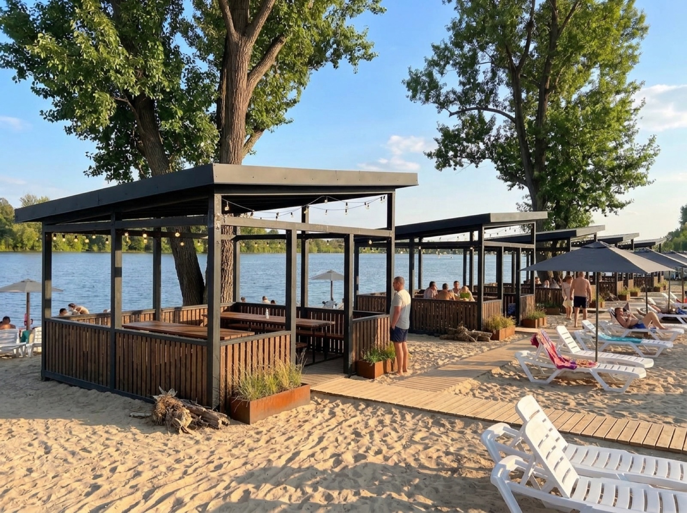
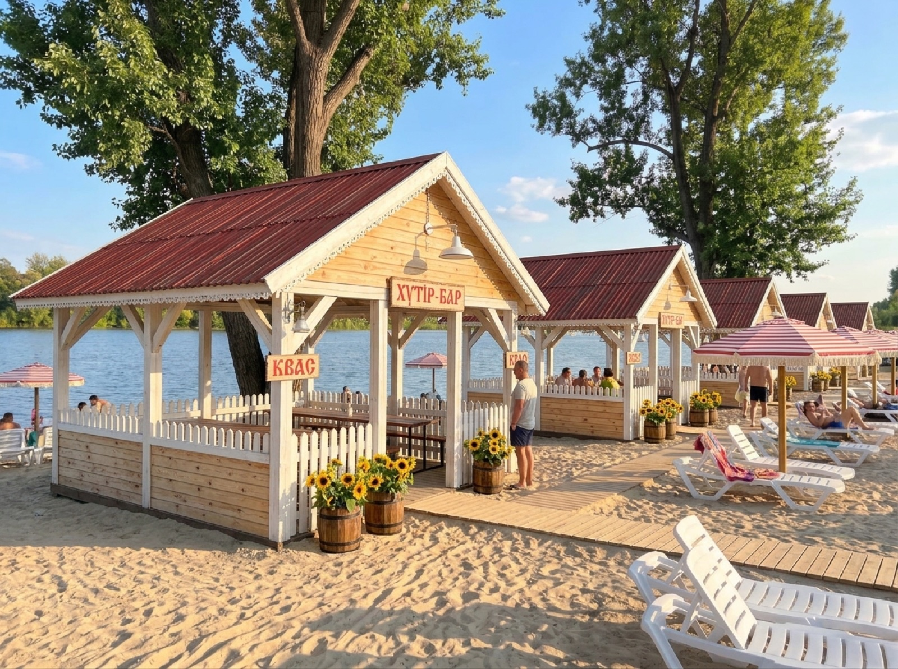
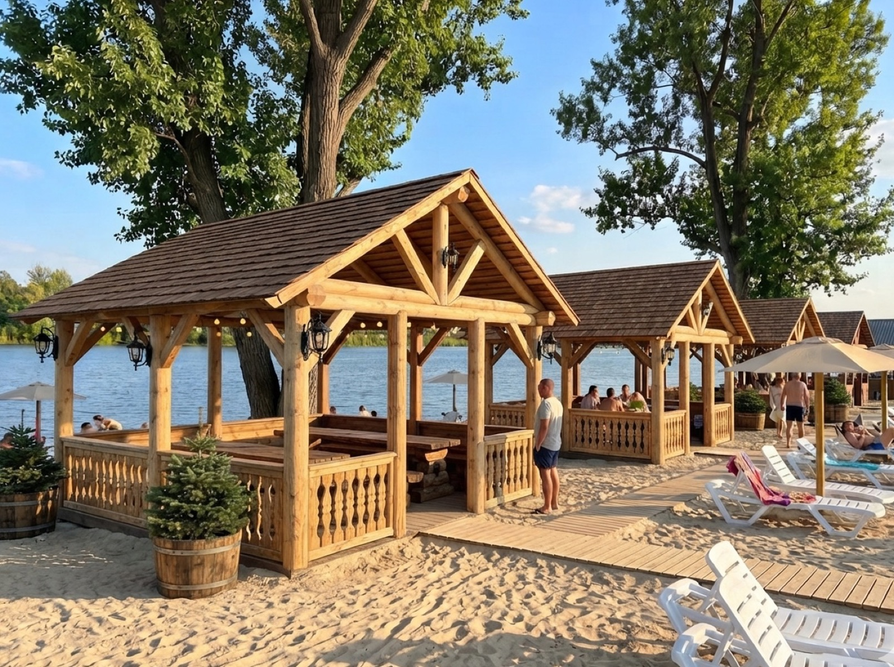
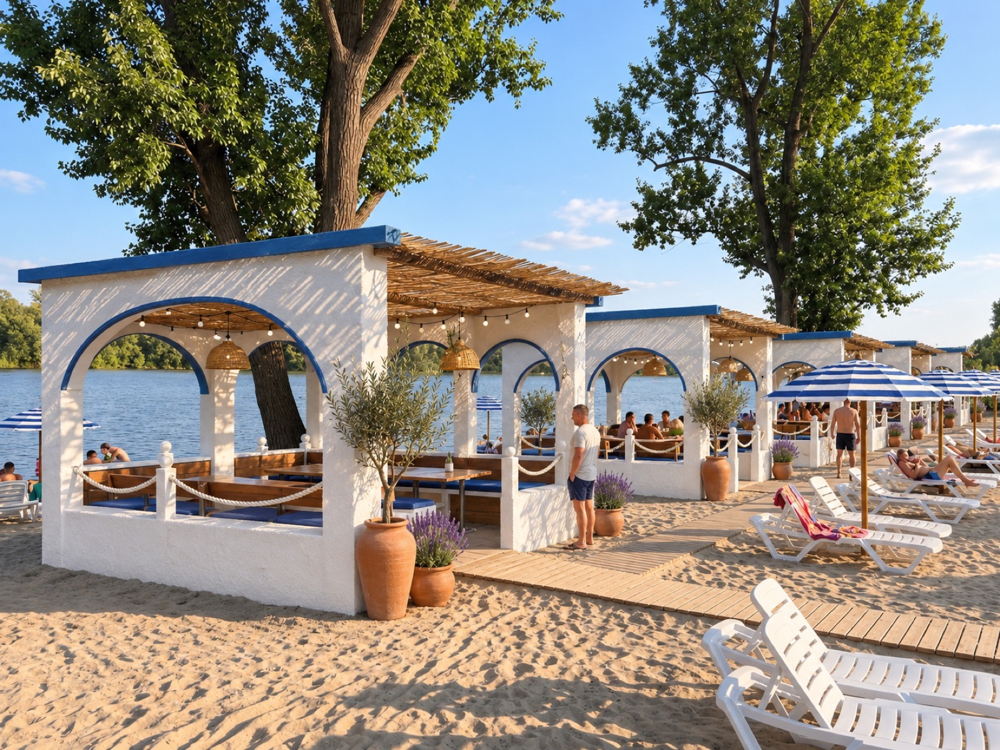
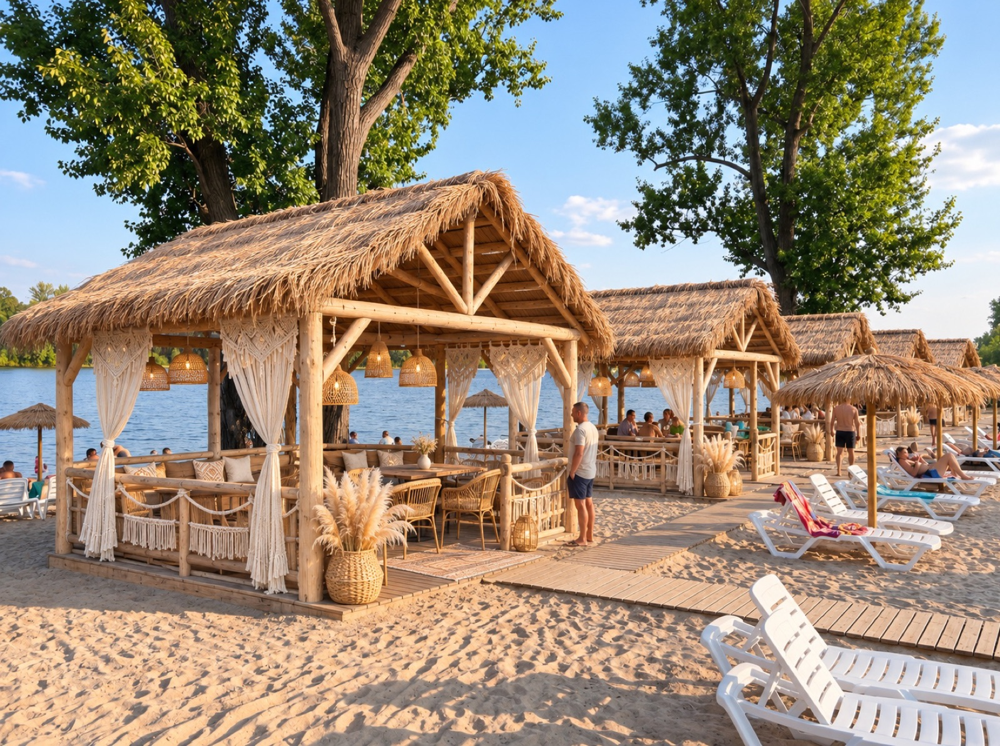

Харків · Основ'янське озеро · концепція
Пляж
Основа
Пляж, який хочеться показувати. Благоустрій коси від кафе «Червона мавпа» до точки «Пляж Основа».
01 · Ділянка
Вузька коса між двома плесами
- Захід: широкий природний піщаний пляж і велика вода
- Схід: лісок і тиха затока, ідеально для будиночків
- Заїзд з вул. Силікатна, парковка біля входу
- 25–30 дерев лишаються, тінь уже є
- Електрика на ділянці є
 Коса зі супутника
Коса зі супутника Генплан згори
Генплан згори02 · Генплан
Маршрут гостя: від входу до мису
- Вхід: адміністрація, каса, кабінки, душі, туалети
- Біля входу: VIP-альтанки, волейбол, дитячий куточок
- Захід: пляж з лежаками і 10 беседок уздовж води
- Схід: бар з кухнею, кальянна, 2 будиночки з чанами
- Мис: пірс, сапи, гойдалка і найкращий захід сонця
04 · Один день на пляжі
Ось як це виглядатиме


05 · Цілий рік
Будиночки з чаном у ліску
Два будиночки на палях з великим вікном на воду, терасою і дерев'яним чаном на дровах. Тиша з боку затоки, окремо від бару і пляжу.
Улітку пляж, восени і взимку чани, ночівля і вечори в гірляндах.
 Будиночок з чаном увечері
Будиночок з чаном увечері06 · Стиль
Шість стилів на вибір






07 · Було / буде
Те саме місце, той самий ракурс
 ЗаразБуде · мис
ЗаразБуде · мис ЗаразБуде · бар
ЗаразБуде · бар ЗаразБуде · будиночки
ЗаразБуде · будиночки 3D і дрон на сайті
3D і дрон на сайті08 · Сайт проєкту
Пройдіться пляжем ще до будівництва
- 3D-модель коси: крутіть, наближайте, тисніть на зони
- Прогулянка на рівні очей і політ дроном
- Літо, осінь, зима, день і ніч
- 32 фото всіх зон і перемикання 6 стилів
Дякуємо
Увесь проєкт в одному посиланні
Наведіть камеру телефона на код: відкриється сайт з 3D-моделлю і всіма фото.
Відкрити сайт →
📞 096 695 87 12
Пляж Основа увечері